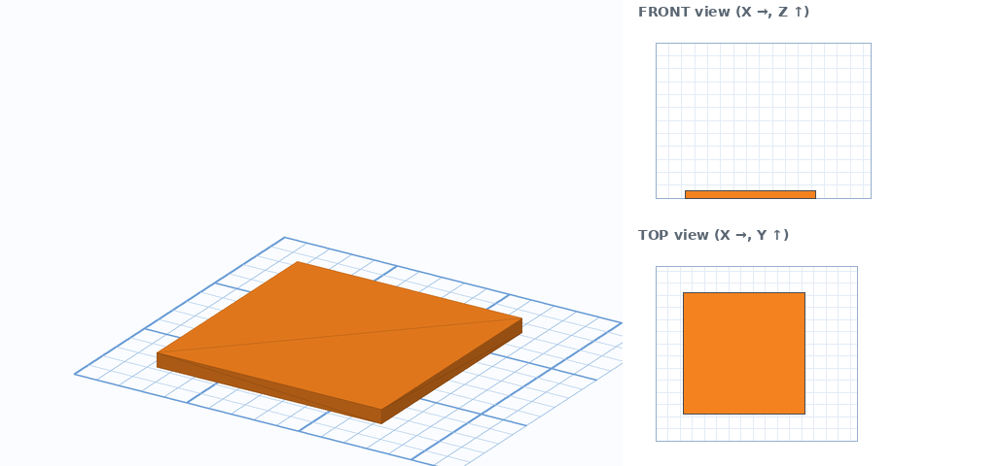
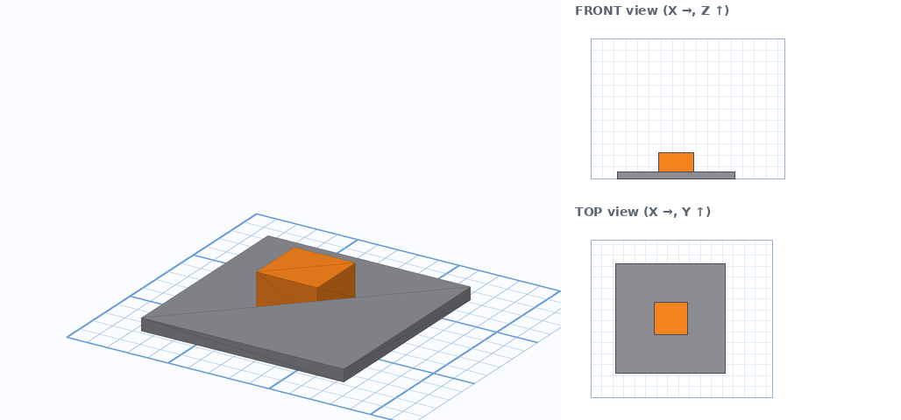
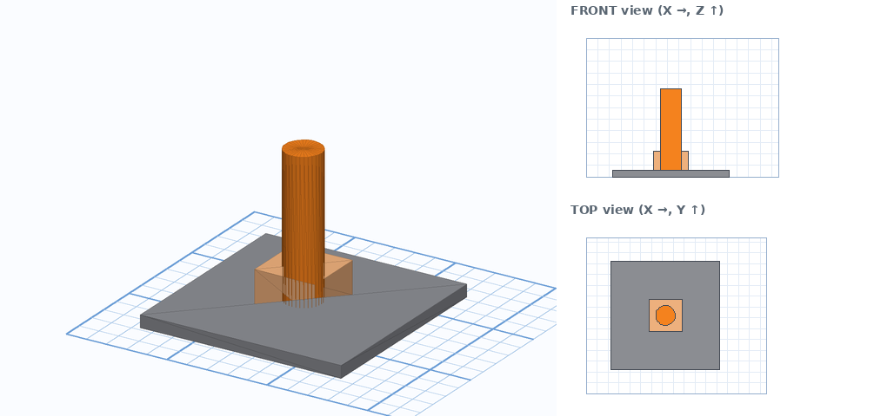
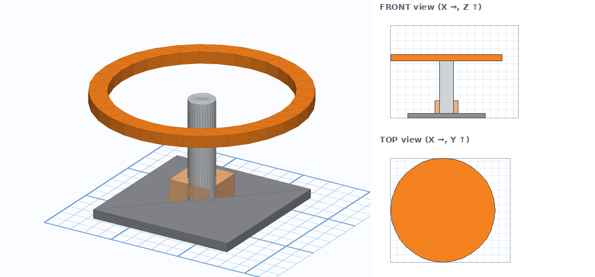
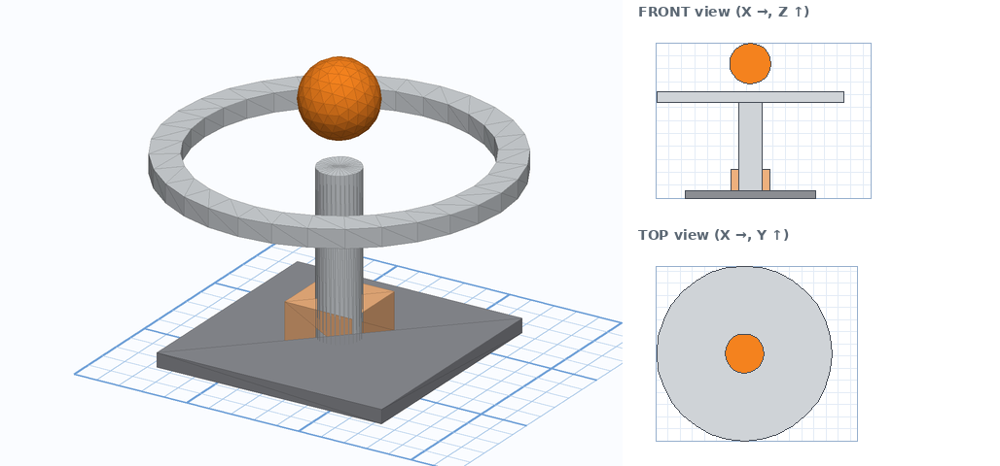
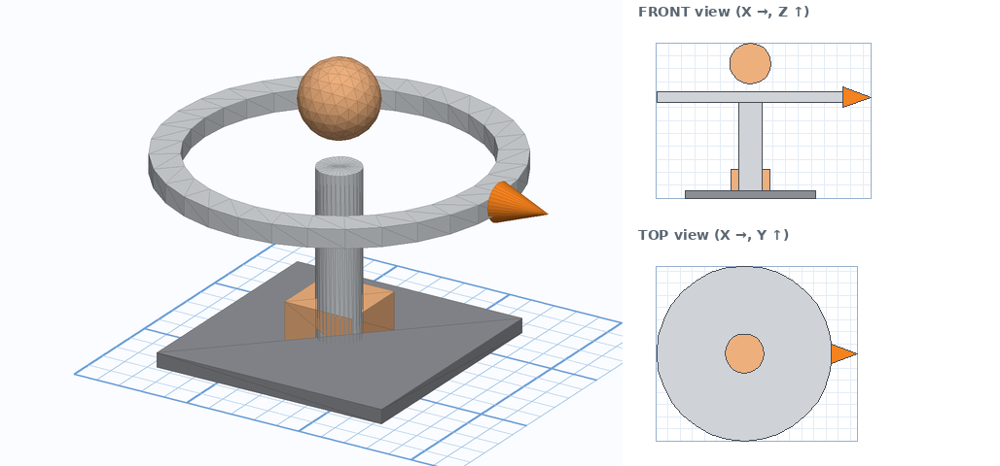
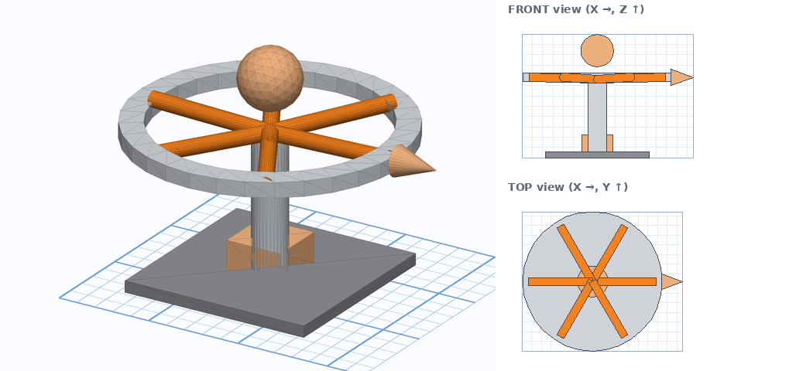
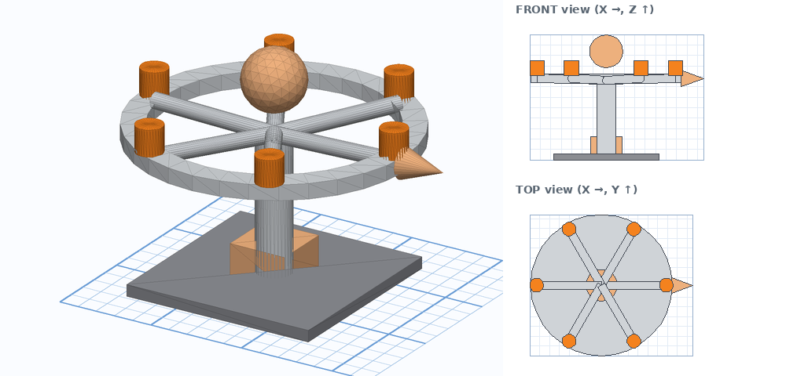
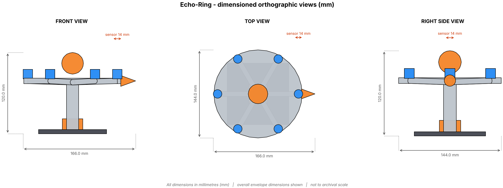

🎬 Watch the tutorial video
The whole build, animated step by step. Press space to pause, drag the bar to rewatch any step. Step numbers match the written guide below.
Tip: use the speed button (⚙) to slow the video to 0.5× while you copy the numbers. Download the video to watch offline.
Before you start
Orange = the part you are making now. Grey = parts you already made.
- Go to tinkercad.com, sign in and click Create → 3D Design.
- Bottom-right of the workplane set Snap grid to 1.0 mm.
- Click the Ruler tool (top of the shapes panel), then click the workplane to place its corner where the front-left corner of your model will be. That corner is X 0, Y 0. X goes to the right, Y goes away from you.
- Every shape table has Ruler X / Y / Z. X and Y are the distances from that corner to the nearest side of the shape. Z is how high the shape's lowest point sits above the workplane (black cone).
- Build the parts in order. Each step adds one orange part to the grey ones.

The steps
Tick each box when you finish a step. If you get stuck press Ctrl+Z and retry that step.
1Mounting plate
- Drag the shape from the Basic Shapes panel onto the workplane.
- Click it and type Size X, Y, Height (the white squares show the number boxes).
- If a Rotate is listed: click a curved arrow, type the angle. Picture is the judge: if it leans the wrong way type the same angle as a negative.
- Place it: with the Ruler at your corner type the X and Y distances, then click the black cone ▲ and type Z (height of its lowest point).
- Colour it grey so the next orange part stands out.

Orange = this step. Grey = already built. Right: front and top views, 10 mm grid.
| Part | Shape | Size (X × Y × Height) | Rotate | Ruler X / Y / Z | Notes |
|---|---|---|---|---|---|
| Mounting plate | Box | 100 × 100 × 6 | none | X 23 Y 22 Z 0 |
2Base servo
Same routine as every step: drag, size, rotate (if listed), ruler X / Y, black cone Z, colour grey. Use the table below the picture.

Orange = this step. Grey = already built. Right: front and top views, 10 mm grid.
| Part | Shape | Size (X × Y × Height) | Rotate | Ruler X / Y / Z | Notes |
|---|---|---|---|---|---|
| Base servo | Box | 30 × 30 × 16 | none | X 58 Y 57 Z 6 |
3Centre mast
Same routine as every step: drag, size, rotate (if listed), ruler X / Y, black cone Z, colour grey. Use the table below the picture.

Orange = this step. Grey = already built. Right: front and top views, 10 mm grid.
| Part | Shape | Size (X × Y × Height) | Rotate | Ruler X / Y / Z | Notes |
|---|---|---|---|---|---|
| Centre mast | Cylinder | 18 × 18 × 70 | none | X 64 Y 63 Z 6 | Sides/Steps 32. |
4Mic ring
Same routine as every step: drag, size, rotate (if listed), ruler X / Y, black cone Z, colour grey. Use the table below the picture.

Orange = this step. Grey = already built. Right: front and top views, 10 mm grid.
| Part | Shape | Size (X × Y × Height) | Rotate | Ruler X / Y / Z | Notes |
|---|---|---|---|---|---|
| Mic ring | Tube | 144 × 144 × 8 wall 12 | none | X 1 Y 0 Z 74 | Set Wall thickness in the shape panel. |
5Beacon dome
Same routine as every step: drag, size, rotate (if listed), ruler X / Y, black cone Z, colour grey. Use the table below the picture.

Orange = this step. Grey = already built. Right: front and top views, 10 mm grid.
| Part | Shape | Size (X × Y × Height) | Rotate | Ruler X / Y / Z | Notes |
|---|---|---|---|---|---|
| Beacon dome | Sphere | 32 × 32 × 32 | none | X 57 Y 56 Z 88 | Sides/Steps 32. |
6Heading marker
Same routine as every step: drag, size, rotate (if listed), ruler X / Y, black cone Z, colour grey. Use the table below the picture.

Orange = this step. Grey = already built. Right: front and top views, 10 mm grid.
| Part | Shape | Size (X × Y × Height) | Rotate | Ruler X / Y / Z | Notes |
|---|---|---|---|---|---|
| Heading marker | Cone | 16 × 16 × 22 | Tip 90° (side arrow) | X 144 Y 64 Z 70 |
7Ring spoke ×6
Same routine as every step: drag, size, rotate (if listed), ruler X / Y, black cone Z, colour grey. Use the table below the picture.

Orange = this step. Grey = already built. Right: front and top views, 10 mm grid.
| Part | Shape | Size (X × Y × Height) | Rotate | Ruler X / Y / Z | Notes |
|---|---|---|---|---|---|
| Ring spoke 1 | Cylinder | 8 × 8 × 66 | Tip 88.3° (side arrow) | X 72.9 Y 68 Z 72 | Sides/Steps 32. |
| Ring spoke 2 | Cylinder | 8 × 8 × 66 | Tip 88.3° (side arrow) then spin 60° (flat arrow) | X 69.5 Y 70 Z 72 | Sides/Steps 32. |
| Ring spoke 3 | Cylinder | 8 × 8 × 66 | Tip 88.3° (side arrow) then spin 120° (flat arrow) | X 36.5 Y 70 Z 72 | Sides/Steps 32. |
| Ring spoke 4 | Cylinder | 8 × 8 × 66 | Tip 88.3° (side arrow) then spin 180° (flat arrow) | X 6.9 Y 68 Z 72 | Sides/Steps 32. |
| Ring spoke 5 | Cylinder | 8 × 8 × 66 | Tip 88.3° (side arrow) then spin 240° (flat arrow) | X 36.5 Y 12.8 Z 72 | Sides/Steps 32. |
| Ring spoke 6 | Cylinder | 8 × 8 × 66 | Tip 88.3° (side arrow) then spin 300° (flat arrow) | X 69.5 Y 12.8 Z 72 | Sides/Steps 32. |
💡 These shapes are identical in size. Build the first one, then press Ctrl+D and only change the Rotate and Ruler / Z numbers for the others.
8Microphone pod ×6
Same routine as every step: drag, size, rotate (if listed), ruler X / Y, black cone Z, colour grey. Use the table below the picture.

Orange = this step. Grey = already built. Right: front and top views, 10 mm grid.
| Part | Shape | Size (X × Y × Height) | Rotate | Ruler X / Y / Z | Notes |
|---|---|---|---|---|---|
| Microphone pod 1 | Cylinder | 14 × 14 × 14 | none | X 132 Y 65 Z 81 | Sides/Steps 32. |
| Microphone pod 2 | Cylinder | 14 × 14 × 14 | none | X 99 Y 122.2 Z 81 | Sides/Steps 32. |
| Microphone pod 3 | Cylinder | 14 × 14 × 14 | none | X 33 Y 122.2 Z 81 | Sides/Steps 32. |
| Microphone pod 4 | Cylinder | 14 × 14 × 14 | none | X 0 Y 65 Z 81 | Sides/Steps 32. |
| Microphone pod 5 | Cylinder | 14 × 14 × 14 | none | X 33 Y 7.8 Z 81 | Sides/Steps 32. |
| Microphone pod 6 | Cylinder | 14 × 14 × 14 | none | X 99 Y 7.8 Z 81 | Sides/Steps 32. |
💡 These shapes are identical in size. Build the first one, then press Ctrl+D and only change the Rotate and Ruler / Z numbers for the others.
9Compare with the teacher's model
- Download UGOT_T03_CHOSEN_Echo-Ring_FINAL.stl.
- In Tinkercad click Import → choose the file → units mm → Import.
- Give the imported model a different colour, select both models and use Align (L) on X, Y and Z with the middle dots.
- Look for anything that sticks out. A difference under about 2 mm is fine. A bigger gap means a number was typed wrongly in that part's step.
10Capture the three views
- Click FRONT on the view cube. If you can right-click the cube, switch on Orthographic. Take a screenshot.
- Click TOP. Screenshot.
- Click RIGHT. Screenshot.
- Paste the three screenshots on one page in Slides or Docs and crop them.

Model answer: front, top and right views with dimensions.
11Add the dimensions
Draw arrows with the line tool and type the sizes. Overall size: 166 × 144 × 120 mm (length × width × height). Then label every part, for example:
| Part | Shape and size (mm) |
|---|---|
| Mounting plate | Box 100 × 100 × 6 |
| Base servo | Box 30 × 30 × 16 |
| Centre mast | Cylinder 18 × 18 × 70 |
| Mic ring | Tube 144 × 144 × 8 |
| Beacon dome | Sphere 32 × 32 × 32 |
| Heading marker | Cone 16 × 16 × 22 |
| Ring spoke | Cylinder 8 × 8 × 66, Cylinder 8 × 8 × 66, Cylinder 8 × 8 × 66 … |
| Microphone pod | Cylinder 14 × 14 × 14, Cylinder 14 × 14 × 14, Cylinder 14 × 14 × 14 … |
12Save and export
- Rename the design to Echo-Ring – your name.
- Click Export → .STL. This is the file a 3D printer slicer uses.
- For a laser-cut part also export .SVG (a flat outline).
- Upload the STL and your 2D drawing where your teacher tells you.
🧠 Tinkercad skills quiz — Echo-Ring
Only about building in Tinkercad: shapes, sizes, handles, shortcuts, exports. Timed and auto-marked; your score is saved to the class sheet when you are logged in above. Read all four options: they are written to look alike.
🏁 Ready to play?
10 questions · 15 seconds each · explanations after every answer.